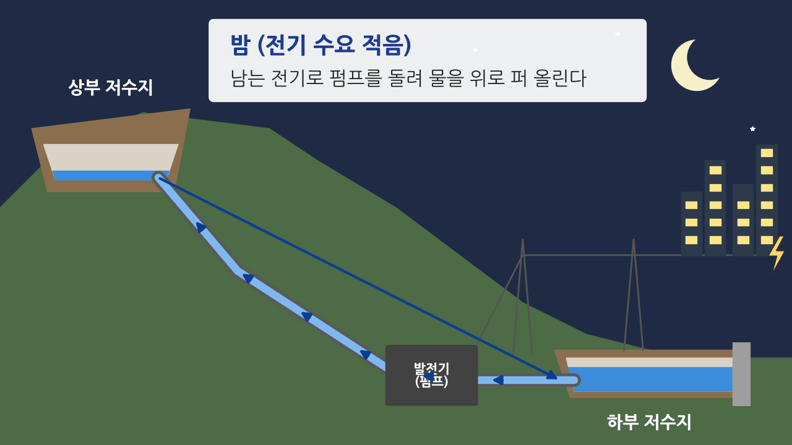

에너지 수입 의존도 94.8%(2022). 전기는 국내에서 만들지만 원료는 거의 모두 배로 들여온다.
자료마다 73쪽 2)(2)② 석탄처럼 학습지 쪽·항목을 붙였습니다. 사진을 누르면 화면 위로 크게 떠오릅니다.
| 학습지 | 학습지 항목 | 이 자료에서 볼 것 |
|---|---|---|
| 72쪽 | 1. 1차 에너지 · 소비 구조 · 1차 에너지 비교 | 수입 의존도, 공급 비중·온실가스 그래프 |
| 73쪽 | 1) 생산 지역 (석탄 · 원자력) | 생산량 순서 그래프, 평안 누층군 지도, 원자력 사진 |
| 73쪽 | 2)(1) 시·도 간 공급량 · (2) 자원별 공급량 | 사진·지도로 보는 '왜 그곳에서 많이 쓸까', 수능특강 (가)~(다) 확인 |
| 74쪽 | 신·재생 에너지 (태양광 · 수력 · 풍력 · 조력) · 양수 발전 | 입지 그림, 생산량 그래프, 수력 사진, 양수 발전 움짤과 통계 비교 |
| 75쪽 | 3) 전력 생산 · 입지 조건과 분포 | 발전소 사진·지도, 독일 vs 프랑스 |
| 76쪽 | 2. 에너지 쟁점 · 시·도별 발전량과 판매량 | 충남 발전 1위·경기 소비 1위, 송전탑, 국산 가스 |
| 77쪽 | 3. 탄소중립 | 탄소의 세 색깔 사진, 2035 감축 목표, 노원 에너지 제로 주택 |
| 78쪽 | 기후변화 협상 · 환경 협약 | 투발루 연설, 미국 탈퇴, 오존층 회복, 우포늪 |
외부 사이트 위쪽 탭 「자원지도 분석」74쪽, 「주요 발전소 분포」75쪽을 누르면 이 칸에 열립니다.
에너지 수입 의존도 94.8%(2022). 전기는 국내에서 만들지만 원료는 거의 모두 배로 들여온다.
석탄은 발전소에 들어가면 1차 에너지, 제철소 용광로에 들어가면 최종 에너지. 왜 그럴까?
A~D는 석유, 석탄, 천연가스, 원자력 중 하나예요. 각각 무엇일까?
A 석유 · B 석탄 · C 천연가스 · D 원자력
석유는 늘 1위지만 비율은 줄고, 천연가스는 꾸준히 늘었다.
무연탄이 든 고생대 평안 누층군(검은색)이 강원 남부(삼척·태백)에 넓게 드러나 있다. 2025년 6월 삼척 도계광업소를 끝으로 국영 탄광은 모두 문을 닫았다(이투데이).
원자로를 식힐 냉각수(바닷물)가 많이 필요하다. 월성·한울 두 단지가 있는 경북이 생산량 1위.
석탄 화력(보령·태안·당진)과 제철소(당진)가 모두 있다. 석탄은 집이 아니라 발전소·제철소가 쓴다.
탄광이 있던 강원보다 충남이 석탄을 훨씬 많이 쓰는 까닭은?
수입 원유를 유조선에서 바로 내리는 항구 옆에 석유 화학 단지가 있다. 석유는 연료보다 플라스틱의 '재료'로 더 많이 쓰인다.
인구 1위 경기가 석유 공급 1위가 아닌 까닭은?
도시가스는 사람 수에 비례한다. 오염이 적어 경기·인천 같은 대도시 가까이에 천연가스 발전소를 짓는다.
우라늄이 발전소에 들어가는 순간 그 시·도의 소비로 센다. 서울이 쓰는 원자력 전기도 통계에는 '경북 소비'.
질문세 시설이 모두 바닷가 항구에 있는 까닭은?
(가), (나)는 어느 시·도이고, A, B는 어떤 에너지일까?
(가) 충남 · (나) 경기 · A 석유 · B 원자력
충남은 석유 화학(서산)·제철(당진)·화력 발전(보령·태안·당진)이 모두 있어 1위. 경기는 인구가 많아 석유·천연가스를 많이 쓴다.
(가)~(다)는 석탄, 석유, 천연가스 중 하나예요. 각각 무엇일까?
(가) 천연가스 · (나) 석유 · (다) 석탄
천연가스는 수도권(경기·인천), 석유는 석유 화학 단지가 있는 울산·전남·충남, 석탄은 화력 발전소·제철소가 있는 충남·경북·전남·강원·경남.
(가)~(다)는 지도의 충남, 충북, 경북 중 하나예요. 각각 어디일까?
(가) 충북 · (나) 경북 · (다) 충남
원자력이 절반이면 원전이 가장 많은 경북, 석탄이 가장 많으면 충남, 석탄·원자력이 없으면 충북.
(가)~(라)는 지도의 경기, 충남, 전남, 울산 중 하나이고, A~C는 석탄, 원자력, 천연가스 중 하나예요.
(가) 충남 · (나) 전남 · (다) 경기 · (라) 울산
A 석탄 · B 천연가스 · C 원자력
경기는 석탄·원자력 없이 천연가스(B)가 많고, 원자력(C)은 원전이 있는 전남·울산에만 있다.
햇빛이 강하고 넓은 땅이 있는 호남. 전남 신안은 수익을 주민과 나누는 '햇빛연금'을 준다(서울신문).
땅이 좁은 서울은 어디에 패널을 설치할까?
물이 많고(넓은 유역) 낙차가 큰(산지) 곳. 장마·태풍으로 물이 많은 여름에 발전량이 많다.
바람을 막는 것이 없는 높은 산 능선과 해안. 북서 계절풍이 센 겨울에 발전량이 많다.
조차가 큰 서해안 + 이미 있던 방조제. 2011년 가동, 세계 최대(254MW).
충남 가로림만 조력 발전은 왜 무산됐을까? (힌트: 갯벌)

질문①에서는 수력이 신·재생과 따로, ②에서는 신·재생 안에 들어 있다. 두 통계에서 수력은 무엇이 다를까?
질문양수식을 넣으면 경북·경남(낙동강)이, 빼면 강원·충북·경기(한강)가 앞서는 까닭은? (힌트: 영남권의 원자력 발전소)
(가)~(라)는 태양광, 수력, 풍력, 조력 중 하나예요. A, B는 어느 시·도일까?
(가) 태양광 · (나) 수력 · (다) 풍력 · (라) 조력 · A 경북 · B 경기
조력은 시화호가 있는 경기가 100%. 수력(양수식 제외)은 충북·강원 등 한강 유역이 많다.
(가)~(다)는 수력, 태양광, 풍력 중 하나예요. 각각 무엇일까?
(가) 풍력 · (나) 태양광 · (다) 수력
풍력은 강원·경북·제주, 태양광은 전남·전북, 수력은 충북·강원·경기(한강 유역).
(가)~(라)는 지도의 충북, 경북, 전남, 제주 중 하나예요. 각각 어디일까?
(가) 전남 · (나) 경북 · (다) 충북 · (라) 제주
태양광 1위는 전남, 수력 비중이 큰 곳은 충북(충주댐), 규모가 작고 풍력 비중이 큰 곳은 제주.
석탄을 배로 내리는 항구 + 냉각수 + 전기를 많이 쓰는 수도권과 가까움.
풍부한 냉각수(해안) + 안정된 지반 → 지형적 제약이 크다.
유량과 낙차가 필요해 기후·지형적 제약이 가장 크다.
석유 파동 뒤 원전을 크게 늘려 남는 전기를 이웃 나라에 판다.
2023년 4월 15일 마지막 원전 3기를 끄고 탈원전을 마쳤다(WNN).
(가)~(다)는 화력, 원자력, 수력 중 하나예요. 각각 무엇일까?
(가) 원자력 · (나) 화력 · (다) 수력(양수식)
원자력은 설비 비율(약 17%)보다 발전량 비율(약 32%)이 훨씬 높다. 쉬지 않고 돌리기 때문.
A~D는 석탄, 석유, 천연가스, 원자력 중 하나예요. 각각 무엇일까?
A 석탄 · B 원자력 · C 천연가스 · D 석유
2023년까지는 석탄(A)이 근소하게 많고, 2024년에 원자력(B)이 1위가 된다.
석탄 화력의 약 절반이 충남 서해안에 있다. 그 대가로 온실가스·미세 먼지 배출도 많다.
인구의 약 4분의 1이 살고 반도체 공장·데이터 센터가 몰려 있다. 모자란 전기는 충남·강원 등에서 끌어온다.
부산·인천은 대도시인데 왜 생산이 더 많을까? (힌트: 고리 원전, 영흥 화력)
고리 원전 전기를 보내는 송전선로에 주민들이 오래 반대했다(2008~2014). 밀양에만 철탑 69기.
전기는 수도권이 쓰는데 송전탑은 왜 지방에 설까?
동해 가스전은 2021년 생산을 마쳤고, 포항 앞바다 '대왕고래'는 2025년 2월 1차 시추에서 경제성이 없었다(뉴시스).
단열을 높이고 태양광을 붙여 쓰는 에너지를 스스로 만든다.
2035 목표: 전력 68.8%, 수송 60.2%, 산업 24.3% 감축.
산업의 감축 목표가 가장 낮은 까닭은?
쓰레기를 태워 전기·난방을 만드는 발전소 지붕에 사계절 스키장을 만들었다(State of Green).
우리 동네 기피 시설이라면 무엇을 얹을 수 있을까?
2021년 투발루 외교 장관이 무릎까지 바닷물에 잠긴 채 COP26 연설을 녹화했다. "우리는 가라앉고 있다."(CNBC)
2026년 1월 27일 효력. 스스로 목표를 내는 협정이라 강제로 붙잡을 수 없다(E&E News).
남극 상공 2066년 무렵 1980년 수준 회복 전망(WMO).
오존층 협약은 성공했는데 기후 협약은 왜 어려울까?
사진은 위키미디어 공용의 자유 이용 사진과 비상교육 한국지리 탐구 교과서(수업용 인용)에서 가져왔고, 사진마다 출처를 적었습니다. 지도 기호의 위치는 대략적입니다.